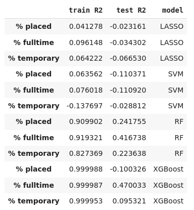
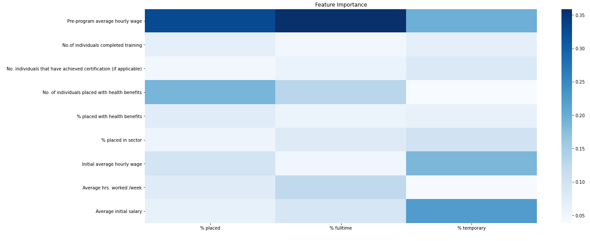
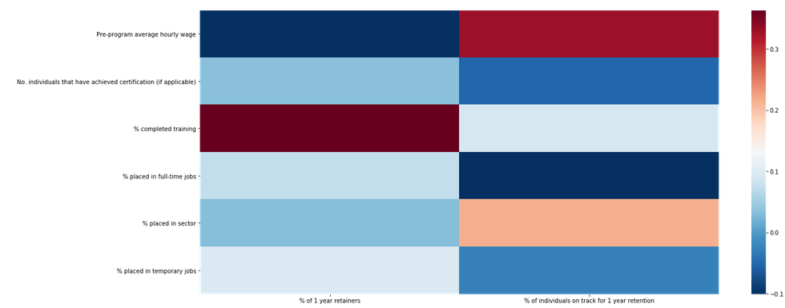
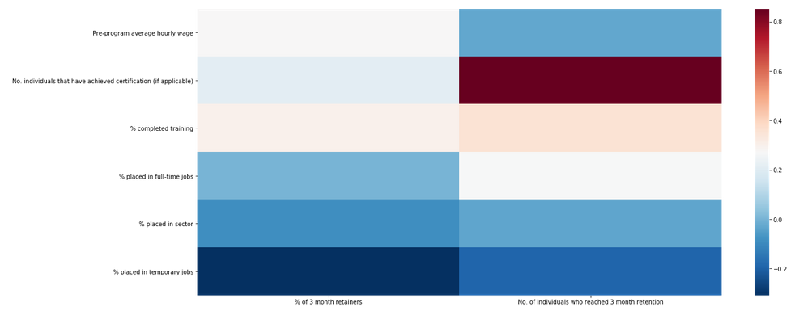
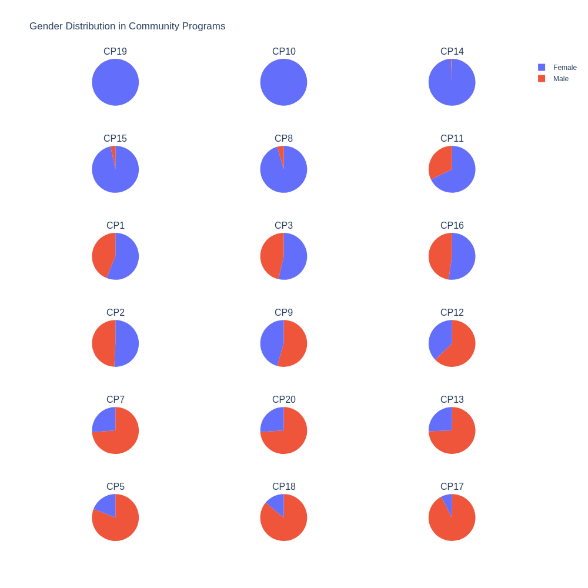
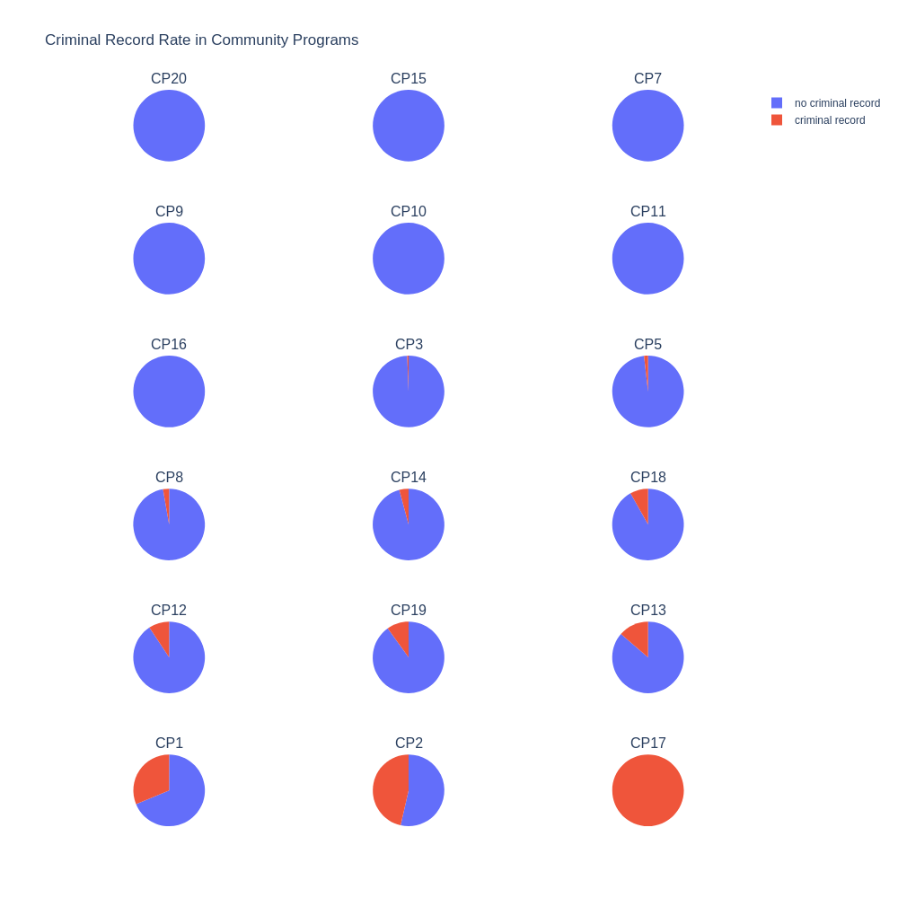
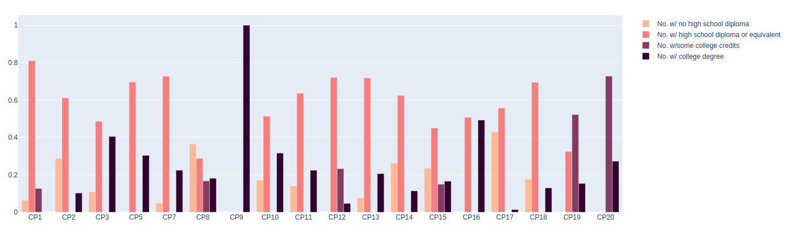
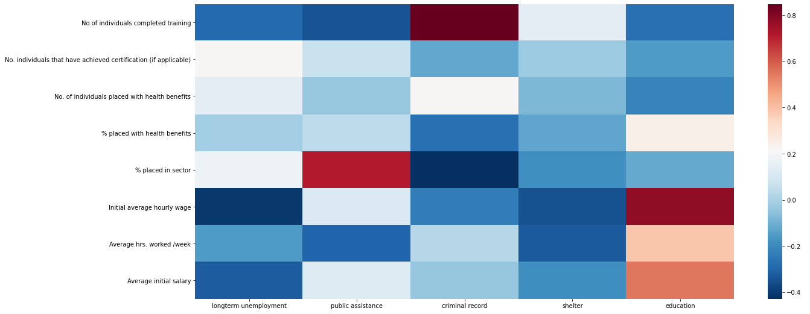
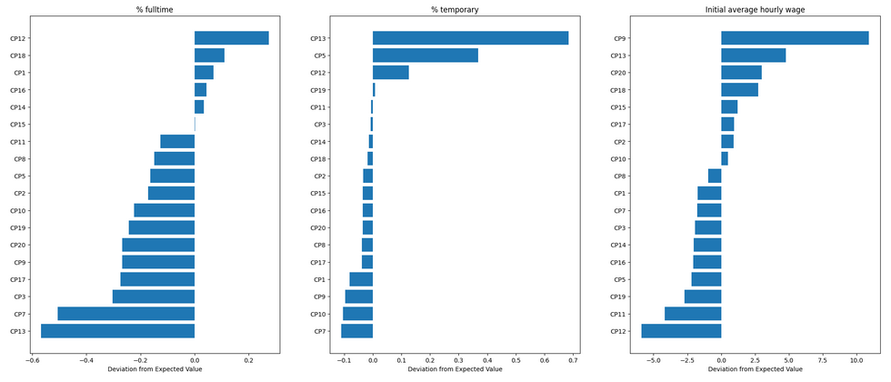

Robinhood is a nonprofit dedicated to helping those in proverty in New York City.
As part of one of their efforts, they help members find full-time and temporary jobs. In our partnership with Robinhood, we received
a dataset containing the various community partner programs that helped individuals find jobs. This dataset included
information on each community program such as the "avg. pre-program hourly wage", "No. of individuals who completed training",
"No. of applicants" and demographic information.
Shown on this page are what characteristics improved job placement and retention for the community programs
as well as visualizations of each program.
For each community program, the dataset included "%fulltime" (percentage of participants placed in a full time job), "%temporarry" (percentage of particpants placed in a temporary job), and "%placed" ( the sum of "%temporary" and "%fulltime"). In order to determine what features affected how many participants were placed in a job, we ran a correlation analysis. In this section we look at the correlation of the features (shown on the left side of the grid below) with the labels (%placed, %fulltime, and %temporary). The more *red* means that there is a positive correlation where as the more *blue* means that there is a negative correlation. So in the grid below, it appears that "Average hrs worked/week" has a relatively high positive correlation to "% fulltime". In other words, the more "Average hrs worked/week", the higher "%fulltime".
Next, a prepocessed dataset was run with the various models: Lasso, SVM, Random Forest (RF), and XGboost (XGB). In the table below are the performance of each model. XGB and RF are the two models that perform well.
Shown here are the feature importances from the RF model. The feature importance grid allows us to see which features were the most useful in predicting the labels (% placed, % fulltime, %temporary). From this grid, it is seen that "Pre-program average hourly wage" has a high feature importance in relation to the label "% fulltime".
For each community program, the dataset included information '% of 3 month retainers', 'No. of individuals who reached 3 month retention', '% of 1 year retainers', '% of individuals on track for 1 year retention'. Shown below is a correlation analysis for these labels; take note that the scales are different for the two figures below. In the first figure below, it can be seen that "% completed training" has a positive correlation to '%1 year retainers', and in the second figure, it can be seen that 'No. individuals that have achieved certification (if applicable)' has an even stronger positive correlation to 'No. of individuals who reached 3 month retention'.
 Shown below is the gender distribution for the various community programs. The pie charts are sorted from highest % female to least % female. In this visualization it is seen that CP19 and CP10 consist of only females.
Shown below is the criminal record distribution for the various community programs. The pie charts are sorted from least % criminal record to highest % criminal record. In this visualization it is seen that CP17 stands out as containing only members with a criminal degree.
Shown below is the distribution of the level of eduction for the community programs. In the shades of pink, light pink is those with no high school diploma ranging to dark purple for those with a college degree. From this visualization it is clear that CP9 stands out as having only members with a college degree.
Shown here is a correlation analysis with demographic information.
 From the plots of feature importance, we found that overall "% completed training" and "Pre program hourly wage"
predicted "% placed" the best.
So shown below in the first graph is the "% completed training" in relationship to the "% placed in job" for all the community programs. For
"% fulltime job" each community program is shown in a different color. The colors can be clicked on to select or deselect the program from the
chart. For the community programs, it is clear that those with a higher "% completed training" had a higher "% placed". On the other hand,
there seemed to be less of a correlation between "% completed training" for those placed in temporary jobs.
Shown below is "Pre program hourly wage" in relationship to the "% placed in job" for all the community programs. The visual is interactive, and "temporary" and "fulltime" can be selected or deselected using the key on the right.
Finally, we would like to determine how well each of the programs are performing respective to how well the model predicts they should be performing. In this visualization, "Prediction Error" is used as a metric to determine how much a program's performance differs from the expected performance of the program by the model. This analysis will help Robinhood determine whether they should provide more funds to a particular program if it is performing below how it is "expected" to perform. Please note that there are many other external features that are not shown by the dataset that can affect a program's performance.

For example in the "%fulltime" graph, community program 15 (CP15) performs as is expected by the model, and hence, there is practically no "Prediction Error".
For CP13, it is seen that it performs much below what the model expects for "%fulltime" graph but much higher than what the model expects for the "%temporary" graph,
indicating that CP13 places participants in temporary jobs much better than in fulltime jobs.
In the "Initial average hourly wage" graph, it is seen that CP9 performs really well relative to the other programs, and this may relate to fact that all of
CP9 participants had a college degree (as seen earlier in the website in the demographic section.)